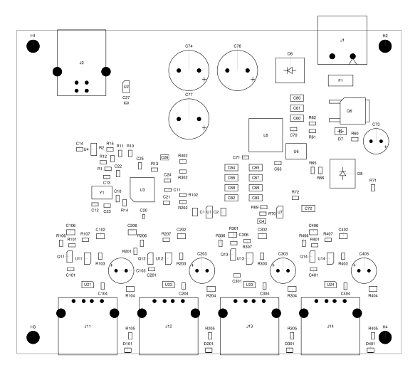
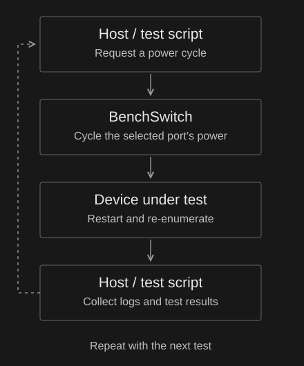

BenchSwitch USB DUT Hub
Host-controlled power cycling for development boards
I’m building BenchSwitch to power-cycle USB development boards from the host computer. It has four USB 2.0 ports with individual power switching.
The project came from a recurring step in firmware development: unplugging a board and plugging it back in. I want that operation available to a test script or software agent, alongside building firmware and reading logs.
The PCB prototype has been ordered. Assembly and bench testing are next.

Host-controlled power cycling
DUT means device under test. Each downstream port has its own power-switching circuit. The intended control path uses uhubctl on the host to switch a selected port off and back on.
For an automated test, the sequence is to request the power cycle, wait for the device to restart and re-enumerate, then collect logs and results. Independent switching allows the test to target one board while leaving the other ports powered.

Hardware
The hub controller is a Microchip USB2514B. The board takes a regulated 12–24 V DC input and converts it to the supply rails for the hub and USB ports.
The design targets are 1 A per port and 2 A shared across the four connected DUTs. The PCB is 95 × 80 mm with four copper layers.
I’m using bare PCBs and separately sourced components for self assembly. The project includes the KiCad design, bill of materials and manufacturing files.
Bench testing
I’ll start with a current-limited supply and check the power rails and reset sequencing. Dummy loads come next, followed by USB devices.
The test plan covers individual and simultaneous port switching, voltage under load, board temperature and USB re-enumeration after repeated power cycles. I’ll use those measurements to set the operating limits and develop a repeatable host-controlled test sequence.